전자기사 (2011-10-02 기출문제)
1과목: 전기자기학
1. 평면도체 표면에서 d[m]의 거리에 점전하 Q[C]이 있을 때, 이 전하를 무한원까지 운반하는데 필요한 일은 몇 [J]인가?
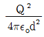
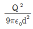
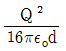
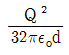
(정답률: 알수없음)

2. 자기 인덕턴스 L1, L2와 상호 인덕턴스 M일 때, 일반적인 자기 결합 상태에서 결합계수 k는?
- k=0
- k=1
- 0＜k＜1
- 1＜k
(정답률: 알수없음)
3. 와전류가 이용되고 있는 것은?
- 수중 음파 탐지기
- 레이더
- 자기브레이크(magnetic break)
- 사이클로트론(cyclotron)
(정답률: 알수없음)
4. 단면적 S, 길이 ℓ, 투자율 μ인 자성체의 자기회로에 권선을 N회 감아서 I의 전류를 흐르게 할 때 자속은?
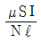
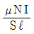
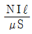
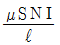
(정답률: 알수없음)
5. 그림과 같은 평행판 콘덴서에 극판의 면적이 S[m2], 진전하밀도를 σ[C/m2], 유전율이 각각 ε1=1, ε2=2인 유전체를 채우고 a, b 양단에 V[V]의 전압을 인가할 때 ε1, ε2인 유전체 내부의 전계의 세기 E1, E2와의 관계식은?
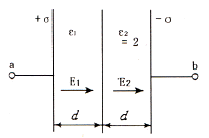
- E1=2E2
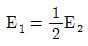
- E1=E2
- E1=4E2
(정답률: 알수없음)
6. 공기 중에 놓여진 반지름 3[cm]의 구(球)도체에 줄 수 있는 최대 전하는 몇 [C]인가? (단, 이 구도체의 주위공기에 대한 절연내력은 3×106 [V/m]이다.)
- 1×10-7[C]
- 2×10-7[C]
- 3×10-7[C]
- 4×10-7[C]
(정답률: 알수없음)
7. N회 감긴 환상코일의 단면적이 S[m2]이고 평균 길이가 ℓ[m]이다. 이 코일의 권수를 반으로 줄이고 인덕턴스를 일정하게 하려고 할 때, 다음 중 옳은 것은?
- 단면적을 2배로 한다.
- 길이를 1/4로 한다.
- 전류의 세기를 4배로 한다.
- 비투자율을 2배로 한다.
(정답률: 알수없음)
8. 무한장 원주형 도체에 전류가 표면에만 흐른다면 원주 내부의 자계의 세기는 몇 [AT/m]인가?
- I/2πr
- NI/2πr
- I/2r
- 0
(정답률: 알수없음)
9. 전기력선의 기본성질이 아닌 것은?
- 전기력선은 그 자신만으로 폐곡선이 된다.
- 전기력선은 전위가 높은 점에서 낮은 점으로 향한다.
- 전기력선은 정전하에서 시작하여 부전하에서 끝난다.
- 전기력선은 도체표면과 외부공간에 존재한다.
(정답률: 알수없음)
10. 중심이 원점에 있고 z=0인 평면에서 반경 r[m]인 원판에 ρs[C/m2]의 면전하밀도가 진공내에 있을 때 원판의 중심축상 z=h 점에서의 전계 E[V/m]는?
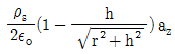
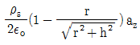
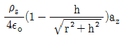
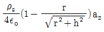
(정답률: 알수없음)
11.
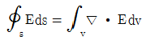
는?- 발산의 정리
- 가우스의 법칙
- 스토크스의 정리
- 암페어의 법칙
(정답률: 알수없음)
12. 반경이 a=10[cm]인 구의 표면전하 밀도를 σ=10-10[C/m2 ]이 되도록 하는 구의 전위는?
- 21.3[V]
- 11.3[V]
- 2.13[V]
- 1.13[V]
(정답률: 알수없음)
13. 자극의 세기 8×10-6 [Wb], 길이가 3[cm]인 막대자석을 120[AT/m]의 평등자계 내에 자력선과 30°의 각도로 놓으면 이 막대자석이 받는 회전력은 몇 [Nㆍm]인가?
- 1.44×10-4[Nㆍm]
- 1.44×10-5[Nㆍm]
- 3.02×10-4[Nㆍm]
- 3.02×10-5[Nㆍm]
(정답률: 알수없음)
14. 정전용량 C 인 평행판 콘덴서를 전압 V로 충전하고 전원을 제거한 후 전극 간격을 1/2로 접근시키면 전압은?
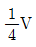
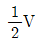
- V
- 2V
(정답률: 알수없음)
15. 그림과 같은 유전속 분포가 이루어질 때 ε1과 ε2의 관계는 어떻게 성립하는가?
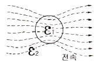
- ε1 > ε2
- ε1 < ε2
- ε1 = ε2
- ε1 < 0, ε2 > 0
(정답률: 알수없음)
16. 서로 다른 두 유전체 사이의 경계면에 전하분포가 없다면 경계면 양쪽에서의 전계 및 자속밀도는?
- 전계의 접선성분 및 전속밀도의 법선성분은 서로 같다.
- 전계의 법선성분 및 전속밀도의 접선성분은 서로 같다.
- 전계 및 전속밀도의 법선성분은 서로 같다.
- 전계 및 전속밀도의 접선성분은 서로 같다.
(정답률: 알수없음)
17. 그림과 같이 구리로 된 동축케이블의 반지름 a=1.048[mm], c=3.65[mm]이며, 전류 I가 흐른다고 할 때 반지름 a에서의 자계의 세기 Ha와 반지름 b에서의 자계의 세기 Hb와의 비 즉,
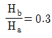
이면 반지름 b는 약 몇 [mm]인가?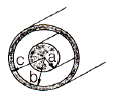
- 2.95[mm]
- 3.14[mm]
- 3.49[mm]
- 3.62[mm]
(정답률: 알수없음)
18. 다음 중 그 양이 증가함에 따라 무한장 솔레노이드의 자기인덕턴스 값이 증가하지 않는 것은 무엇인가?
- 철심의 투자율
- 철심의 길이
- 철심의 반경
- 코일의 권수
(정답률: 알수없음)
19. 비투자율 1000인 철심이 든 환상솔레노이드의 권수가 600회, 평균지름 20[cm], 철심의 단면적 10[cm2]이다. 이 솔레노이드에 2A의 전류가 흐를 때 철심내의 자속은 약 몇 [Wb]인가?
- 1.2×10-3[Wb]
- 1.2×10-4[Wb]
- 2.4×10-3[Wb]
- 2.4×10-4[Wb]
(정답률: 알수없음)
20. 전자계에 대한 맥스웰의 기본 이론이 아닌 것은?
- 전하에서 전속선이 발산된다.
- 고립 단자극은 존재하지 않는다.
- 변위전류는 자계를 발생하지 않는다.
- 자계의 시간적 변화에 따라 전계의 회전이 생긴다.
(정답률: 84%)
2과목: 회로이론
21. 콘덴서 C에 단위 임펄스의 전류원을 접속하여 동작시키면 콘덴서의 전압 Vc(t)는?
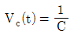
- Vc(t)=C
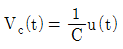
- Vc(t)=Cu(t)
(정답률: 알수없음)
22. 교류 브리지가 평형 상태에 있을 때 L의 값은?
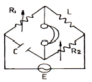
- L = R2 / (R1C)
- L = CR1R2
- L = C / (R1R2)
- L = (R1R2) / C
(정답률: 알수없음)
23.
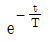
인 감쇠지수 함수의 진폭 스펙트럼은?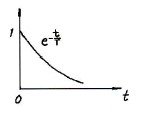
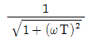
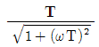
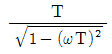
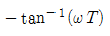
(정답률: 알수없음)
24. 일반적으로 f(t) = -f(-t)의 조건을 만족하는 경우 f(t)를 무슨 함수라 하는가?
- 기함수
- 우함수
- 삼각함수
- 초월함수
(정답률: 알수없음)
25. 다음 그림과 같은 삼각파의 파고율은?
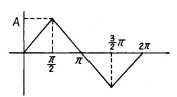
- 1.12
- 1.73
- 1
- 1.41
(정답률: 알수없음)
26. 다음을 역 Laplace로 변환하면?
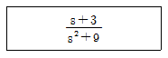
- cos 3t
- sin 3t
- sin 9t +cos 9t
- sin 3t +cos 3t
(정답률: 알수없음)
27. 100[V], 30[W]의 형광등에 100[V]를 가했을 때, 0.5[A]의 전류가 흐르고 그 소비전력은 20[W]이었다면 이 형광등의 역률은?
- 0.4
- 0.5
- 0.6
- 0.8
(정답률: 알수없음)
28. 두 개의 코일 L1과 L2를 동일방향으로 직렬 접속하였을 때 합성인덕턴스가 100[mH]이고, 반대방향으로 접속하였더니 합성인덕턴스가 40[mH]이었다. 이 때, L1=60[mH]이면 결합계수 K는 약 얼마인가?
- 0.4
- 0.6
- 0.8
- 1.0
(정답률: 알수없음)
29. 저항 R과 리액턴스 X를 직렬로 연결할 때의 역률은?
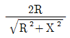
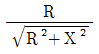
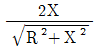
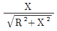
(정답률: 알수없음)
30. 4단자 정수의 표현이 옳지 않은 것은?
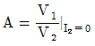
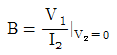
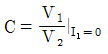
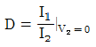
(정답률: 알수없음)
31. 100[μF]의 콘덴서에 100[V], 60[Hz]의 교류 전압을 가할 때의 무효전력은 몇 [VAR]인가?
- -40π
- -60π
- -120π
- -240π
(정답률: 알수없음)
32. 원점을 지나지 않는 원의 역 궤적은?
- 원점을 지나는 원
- 원점을 지나는 직선
- 원점을 지나지 않는 원
- 원점을 지나지 않는 직선
(정답률: 알수없음)
33. 그림과 같은 4단자 회로망에서 하이브리드 파라미터 h11은?
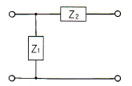
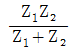
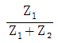
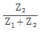
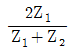
(정답률: 알수없음)
34. 리액턴스 함수가
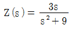
로 표시되는 리액턴스 2단자망은?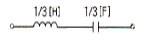
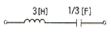
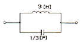
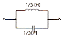
(정답률: 알수없음)
35. e-atcosωt의 라플라스(Laplace) 변환은?
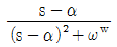
(정답률: 알수없음)
36. 다음 회로에 흐르는 전류 I는 약 몇 [A]인가? (단, E : 100[V], ω : 1000[rad/sec])
- 8.95
- 7.24
- 4.63
- 3.52
(정답률: 알수없음)
37. RC 직렬회로에서 t= 2RC일 때 콘덴서 방전 전압은 충전 전압의 약 몇 [%]가 되는가?
- 13.5
- 36.7
- 63.3
- 86.5
(정답률: 알수없음)
38. 다음과 같은 회로에서 저항 RL 양단자(RL을 개방)에서 본 테브난 등가저항[Ω]은?
- 2[Ω]
- 4[Ω]
- 6[Ω]
- 8[Ω]
(정답률: 60%)
39. 단위계단함수의 라플라스 변환은?
- 1
- S
- 1/S
- 1/S-1
(정답률: 알수없음)
40. 다음 회로가 정저항 회로가 되기 위한 R의 값은?
(정답률: 알수없음)
3과목: 전자회로
41. 다음과 같은 FET 소신호 증폭기 회로에서 입력전압이 10[mV]일 때 출력전압으로 가장 적합한 것은?
- 입력전압과 동위상인 100[mV]
- 입력전압과 역위상인 100[mV]
- 입력전압과 동위상인 200[mV]
- 입력전압과 역위상인 200[mV]
(정답률: 알수없음)
42. 공간 전하 용량을 변화시켜 콘덴서 역할을 하도록 설계된 다이오드는?
- 제너 다이오드
- 터널 다이오드
- 바렉터 다이오드
- Gunn 다이오드
(정답률: 알수없음)
43. 트랜지스터 고주파 특성의 α 차단주파수(fα)에 대한 설명으로 가장 적합한 것은?
- 컬렉터 용량에만 비례한다.
- 컬렉터 인가 전압에 비례한다.
- 베이스 폭과 컬렉터 용량에 각각 반비례한다.
- 베이스 폭의 자승에 반비례하고, 확산계수에 비례한다.
(정답률: 알수없음)
44. 전압증폭도 Av = 5000인 증폭기에 부궤환을 걸때 전압증폭도 Af= 800이 되었다. 이 때 궤환율 β는 몇 [%]인가?
- 0.1⑤[%]
- 0.2⑤[%]
- 0.3⑤[%]
- 0.4⑤[%]
(정답률: 알수없음)
45. 불 방정식 를 간단하게 하면 어떻게 되는가?
(정답률: 알수없음)
46. 다음 회로는 BJT의 소신호 등가 모델이다. 여기서 ro와 가장 관련이 깊은 것은?
- Early 효과
- Miller 효과
- Pinchoff 현상
- Breakdown 현상
(정답률: 알수없음)
47. 다음 중 부궤환에 의한 출력임피던스 변화에 대한 설명으로 옳지 않은 것은?
- 전압 직렬 궤환시 출력임피던스는 감소한다.
- 전압 병렬 궤환시 출력임피던스는 감소한다.
- 전류 직렬 궤환시 출력임피던스는 증가한다.
- 전류 병렬 궤환시 출력임피던스는 감소한다.
(정답률: 알수없음)
48. FET와 BJT의 전기적 특성을 비교했을 때 적합하지 않은 것은?
- FET는 BJT보다 잡음이 적다.
- FET는 BJT보다 입력저항이 작다.
- FET는 BJT보다 이득대역폭적이 작다.
- FET는 BJT보다 온도변화에 따른 안정성이 높다.
(정답률: 알수없음)
49. Negative feedback 회로에 대한 설명으로 옳지 않은 것은?
- 이득 감소
- sensitivity 감소
- 대역폭 감소
- 잡음 감소
(정답률: 알수없음)
50. 그림과 같은 연산 증폭기에서 입력 바이어스 전류란?
- VO = 0일 때 (IB1+IB2) / 2
- VO = ∞일 때 (IB1+IB2) / 2
- VO = 0일 때 (IB1+IB2)
- VO = ∞일 때 (IB1+IB2)
(정답률: 알수없음)
51. 다음 회로의 동작에 대한 설명으로 가장 적합한 것은? (단, 입력신호는 진폭이 Vm인 정현파이고, 다이오드는 이상적인 것이며, RC 시정수는 신호파의 주기에 비해 매우 크다.)
- 출력은 Vi이다.
- 출력은 2Vi이다.
- 출력전압은 VR - Vm인 정현파이다.
- 부방향 peak를 기준레벨 VR로 클램프한다.
(정답률: 알수없음)
52. 연산증폭기의 일반적인 특징에 대한 설명으로 옳은 것은?
- 주파수 대역폭이 좁다.
- 입력 임피던스가 낮다.
- 동상신호제거비가 크다.
- 온도변화에 따른 드리프트가 크다.
(정답률: 알수없음)
53. 펄스 반복주파수 600[Hz], 펄스폭 1.5[μs]인 펄스의 충격계수 D는?
- 1×10-4
- 3×10-4
- 6×10-4
- 9×10-4
(정답률: 알수없음)
54. 듀티 사이클(Duty Cycle)이 0.1이고 주기가 30[μs]인 펄스의 폭은 몇 [μs]인가?
- 0.3
- 1
- 3
- 10
(정답률: 82%)
55. 다음 중 C급 전력 증폭기에 대한 설명으로 적합하지 않은 것은?
- 유통각은 180도 미만이다.
- 광대역 증폭기로 적합하다.
- 최대 효율은 78.5[%] 이상이다.
- RF 전력증폭기, 주파수 체배기 등에 주로 사용된다.
(정답률: 알수없음)
56. 궤환 발진기의 발진 조건을 나타내는 식은? (단, A는 증폭도, β는 궤환율이다.)
- βA = 1
- βA = 0
- βA = ∞
- βA = 100
(정답률: 알수없음)
57. 트랜지스터의 직류 증폭기에 있어서 드리프트를 초래하는 주된 원인으로 적합하지 않은 것은?
- hfe의 온도변화
- hre의 온도변화
- VBE의 온도변화
- ICO의 온도변화
(정답률: 알수없음)
58. 전류 궤환 증폭기의 출력 임피던스는 궤환이 없을 때와 비교하면 어떻게 되는가?
- 감소한다.
- 변화가 없다.
- 증가한다.
- 입력신호의 크기에 따라 증가 또는 감소한다.
(정답률: 알수없음)
59. 다음 연산증폭기 회로에서 저항 Rf양단에 걸리는 전압 Vf = (25 If2 +50 If+3)[V]의 관계가 있을 때 출력 전압 VO는?
- -3[V]
- -3.2[V]
- -4.1[V]
- -5.8[V]
(정답률: 알수없음)
60. 전가산기를 구성할 때 필요한 게이트는?
- X-OR 2개, AND 2개, OR 1개
- X-OR 2개, AND 1개, OR 2개
- X-OR 1개, AND 2개, OR 2개
- X-OR 2개, AND 2개, OR 2개
(정답률: 알수없음)
4과목: 물리전자공학
61. 길이 10[mm], 이동도 0.16[m2/Vㆍsec]인 N형 Si의 양단에 전압 10[V]을 가했을 때 전자의 속도는?
- 160[m/sec]
- 180[m/sec]
- 16[m/sec]
- 18[m/sec]
(정답률: 알수없음)
62. 절대온도 0[K]에서 금속 내 자유전자 평균 온동 에너지는? (단, EF는 페르미 준위이다.)
- 0
- EF
(정답률: 알수없음)
63. 전자의 운동량(P)과 파장(λ) 사이의 드브로이(De Broglie) 관계식은? (단, h는 Plank 상수)
(정답률: 알수없음)
64. 컬렉터 접합의 공간 전하층은 컬렉터 역바이어스가 증가함에 따라 넓어지며 따라서 베이스 중성영역의 폭이 줄어든다. 이러한 현상은?
- Early 효과
- Tunnel 효과
- punch-through
- Miller 효과
(정답률: 알수없음)
65. 절대온도 0[K]가 아닌 상태의 에너지 준위에서 입자의 점유율이 1/2이 되는 조건은?
- E=Ef
- E＞Ef
- E＜Ef
(정답률: 알수없음)
66. 2500[V]의 전압으로 가속된 전자의 속도는 약 얼마인가?
- 2.97×107[m/s]
- 9.07×107[m/s]
- 2.97×106[m/s]
- 9.07×106[m/s]
(정답률: 알수없음)
67. Ge의 진성 캐리어 밀도는 상온에서 Si보다 높다. 그 이유에 대한 설명으로 가장 옳은 것은?
- Ge의 에너지갭이 Si의 에너지갭보다 좁기 때문에
- Si의 에너지갭이 Ge의 에너지갭보다 좁기 때문에
- Ge이 캐리어 이동도가 Si보다 크기 때문에
- Ge이 캐리어 이동도가 Si보다 작기 때문에
(정답률: 알수없음)
68. 금속의 2차 전자 방출비에 대하여 가장 옳게 설명한 것은?
- 항상 일정하다.
- 방출비 값은 항상 1보다 작다.
- 금속의 종류에 따라서 달라진다.
- 2차 전자는 반사되는 전자를 의미한다.
(정답률: 알수없음)
69. MOSFET에 대한 설명으로 옳지 않은 것은?
- 입력 임피던스가 크다.
- 저잡음 특성을 쉽게 얻을 수 있다.
- 제작이 간편하고, IC화 하기에 적합하다.
- 사용주파수 범위가 쌍극성 트랜지스터보다 높다.
(정답률: 알수없음)
70. 전자와 정공의 이동도가 각각 0.32[m2/Vㆍs], 0.18[m2/Vㆍs]이고 저항률이 0.5[Ωㆍm]인 진성반도체의 캐리어 밀도는? (단, 전자의 전하량은 -1.6×10-19 [C]이다.)
- 1.2×1018 [개/m3]
- 1.8×1018 [개/m3]
- 2.5×1019 [개/m3]
- 3.6×1019 [개/m3]
(정답률: 알수없음)
71. 다음 중 N형 반도체를 표시하는 식으로 옳은 것은? (단, n : 전자의 농도, p : 정공의 농도)
- n = p
- n > p
- n < p
- np = 0
(정답률: 알수없음)
72. 피에조 저항(piezo resistance)은?
- 압력 변화에 의한 저항의 변화이다.
- 자계 변화에 의한 저항의 변화이다.
- 온도 변화에 의한 저항의 변화이다.
- 광전류 변화에 의한 저항의 변화이다.
(정답률: 알수없음)
73. 마치 3극관이 음극에서 양극에 향하는 전자류를 격자에 의하여 제어하듯이 N형(또는 P형) 반도체 내의 전자(정공)의 흐름을 제어하는 것은?
- TRIAC(트라이액)
- FET(Field Effect Transistor)
- SCR(Silicon Controlled Rectifier)
- UJT(Unijunction Junction Transistor)
(정답률: 알수없음)
74. 캐리어의 확산 거리는 무엇에 의존하는가?
- 반도체의 모양
- 캐리어의 이동도에만 의존
- 캐리어의 수명시간에만 의존
- 캐리어의 이동도와 수명시간에 의존
(정답률: 알수없음)
75. 실리콘 단결정 반도체에서 N형 불순물로 사용될 수 있는 것은?
- 인듐(In)
- 갈륨(Ga)
- 인(P)
- 알루미늄(Al)
(정답률: 알수없음)
76. 다음 중 광양자가 에너지와 운동량을 갖고 있음을 나타내는 것은?
- 광전 효과(photo electric effect)
- 콤프턴 효과(compton effect)
- 에디슨 효과(Edison effect)
- 홀 효과(Hole effect)
(정답률: 알수없음)
77. 기체 중에서 방전 현상은 어느 현상에 해당하는가?
- 전리 현상
- 절연 파괴
- 광전 효과
- 절연
(정답률: 알수없음)
78. 에너지 준위도에서 0 준위는?
- 페르미 준위
- 이탈 준위
- 금속내 준위
- 금속외 준위
(정답률: 알수없음)
79. 열평형 상태에서 pn 접합 전류가 0이라면, 그 의미는?
- 전위장벽이 없어졌다.
- 접합을 흐르는 다수 캐리어가 없다.
- 접합을 흐르는 소수 캐리어가 없다.
- 접합을 흐르는 소수 캐리어와 다수 캐리어가 같다.
(정답률: 알수없음)
80. 다음 중 반도체 레이저의 일반적인 특징에 관한 설명으로 옳지 않은 것은?
- 소형화가 가능하다.
- 가스 레이저에 비해 증폭, 발진, 변조가 쉽다.
- 고체, 기체 및 액체 레이저에 비해 효율이 낮다.
- 루비 및 기체 레이저에 비해 낮은 전력으로 동작한다.
(정답률: 50%)
5과목: 전자계산기일반
81. 기억장치에 대한 설명 중 틀린 것은?
- 주기억장치는 CPU와 직접 자료교환이 가능하다.
- 보조기억장치는 CPU와 직접 자료교환이 불가능하다.
- 주기억장치 소자는 대부분 외부와 직접 자료교환을 할 수 있는 단자가 있다.
- 기억장치에서 사용하는 정보의 단위는 와트(watt)이다.
(정답률: 알수없음)
82. 마이크로프로세서의 명령어 형식이 OP-code 5비트, Operand 11비트로 이루어져 있다면, 명령어의 최대 개수와 사용할 수 있는 최대 메모리 크기는?
- 32개, 1024워드
- 32개, 2048워드
- 64개, 1024워드
- 64개, 2048워드
(정답률: 알수없음)
83. 어셈블러 언어(assembly language)의 설명으로 틀린 것은?
- 기계어를 사람이 이해할 수 있도록 만든 저급 수준의 언어이다.
- 컴퓨터 하드웨어에 대한 충분한 지식이 없어도 프로그램을 작성하기가 용이하다.
- 각 컴퓨터는 시스템별로 고유의 어셈블리 언어를 갖는다.
- 하드웨어와 밀접한 관계를 갖고 있으므로 하드웨어를 효율적으로 사용할 수 있다.
(정답률: 알수없음)
84. 부동소수점 표현의 수들 사이의 곱셈 알고리즘 과정에 포함되지 않는 것은?
- 0(zero)인지 여부를 조사한다.
- 가수의 위치를 조정한다.
- 가수를 곱한다.
- 결과를 정규화한다.
(정답률: 알수없음)
85. C 언어에서 for문이 무한반복을 실행하는 도중에 빠져 나오기 위한 명령어는?
- break
- while
- if
- default
(정답률: 알수없음)
86. 다음은 무슨 연산 동작을 나타내는 것인가? (단, A, B는 입력 값을 의미하고, R1, R2, R3, R4는 레지스터를 의미한다.)
- Addition
- Subtraction
- Multiplication
- Division
(정답률: 알수없음)
87. 주소 명령 형식 중 3-주소 명령의 장점은?
- 비트가 많이 필요하다.
- 연산 후 입력 자료가 변한다.
- 레지스터의 수가 적게 필요하다.
- 프로그램의 길이를 짧게 할 수 있다.
(정답률: 알수없음)
88. 다음 중 시스템버스에 속하지 않는 것은?
- 제어 버스
- 주소 버스
- 데이터 버스
- I/O 버스
(정답률: 알수없음)
89. 일반적으로 컴퓨터가 가지는 CPU의 구조로 틀린 것은?
- 단일 누산기 구조(single accumulator organization)
- 범용 레지스터 구조(general register organization)
- 특수 레지스터 구조(special register organization)
- 스택 구조(stack organization)
(정답률: 알수없음)
90. 프로그래밍 언어의 종류 중 객체 지향적인 프로그래밍 언어는?
- FORTRAN
- ALGOL
- 어셈블리어
- C++
(정답률: 알수없음)
91. 전자계산기에서 실행되는 계산 수행 장치는?
- 입력장치
- 연산장치
- 기억장치
- 제어장치
(정답률: 알수없음)
92. 65가지의 서로 다른 사항들에 각각 다른 2진 코드 값을 주고자 한다. 이 경우 최소한 몇 비트가요구되는가?
- 6
- 7
- 8
- 9
(정답률: 알수없음)
93. 10진수 255.875를 16진수로 변환하면?
- FE.D
- FF.E
- 9F.8
- FF.5
(정답률: 알수없음)
94. 컴퓨터 확장슬롯에 연결되는 PCI 신호 중에서 현재 지정된 어드레그사 디코딩되어 접근이 가능한지를 나타내는 신호는?
- LOCK
- STOP
- IDSEL
- TRDY
(정답률: 알수없음)
95. 스택(LIFO : Last In First Out)의 용도에 적당하지 않은 것은?
- 수식의 계산
- 서브루틴의 복귀주소 저장
- 인터럽트 처리
- 우선순위 결정
(정답률: 알수없음)
96. 다음 주소지정 방식 중에서 반드시 누산기를 필요로 하는 방식은?
- 3-주소지정 방식
- 2-주소지정 방식
- 1-주소지정 방식
- 0-주소지정 방식
(정답률: 50%)
97. 주기억장치와 I/O장치 사이와의 시간적, 공간적 특성 차이를 나타낸 것이 아닌 것은?
- 동작속도
- 정보의 처리 단위
- 동작의 자율성
- 버스구성
(정답률: 알수없음)
98. 부동소수점 표현 방식의 설명으로 잘못된 것은?
- 2의 보수 표현 방법을 많이 사용한다.
- 매우 큰 수와 작은 수를 표시하기에 편리하다.
- 부호, 지수부, 가수부 등으로 구성되어 있다.
- 연산이 복잡하고 시간이 많이 걸린다.
(정답률: 알수없음)
99. LCD 방식을 이용하나 박막 트랜지스터를 사용하여 전압을 일정하게 유지해서 안정되고 정교한 화소(pixel)를 구현함으로서 화면이 깨끗하고, 측면에서도 비교적 잘 보이는 장점 때문에 노트북 모니터로 많이 사용되는 것은?
- 플라즈마(Plasma)
- CRT(Cathode Ray Tube)
- TFT(Thin Film Transistor)
- 터치스크린(Touch Screen)
(정답률: 알수없음)
100. 아래의 C 프로그램을 수행하였을 때, C의 값으로 적절한 것은?
- 3
- 12
- 15
- -9
(정답률: 알수없음)
전하를 무한원까지 운반하는 일은 전하를 무한원으로 이동시키는 일과 같다. 이 때, 전하가 이동하는 거리는 d[m]이고, 전하 Q[C]가 있는 평면도체의 전위는 V[V]이다. 따라서 전하를 무한원까지 운반하는데 필요한 일은 QV[J]이다.
전위 V는 전하 Q가 있는 위치에서 무한원까지의 전위차이를 의미한다. 이 때, 전위차이는 전기장 E[N/C]와 거리 d[m]의 곱으로 계산할 수 있다. 즉, V = Ed이다. 따라서 QV = QEd이다.
따라서 전하를 무한원까지 운반하는데 필요한 일은 QV = QEd[J]이다.